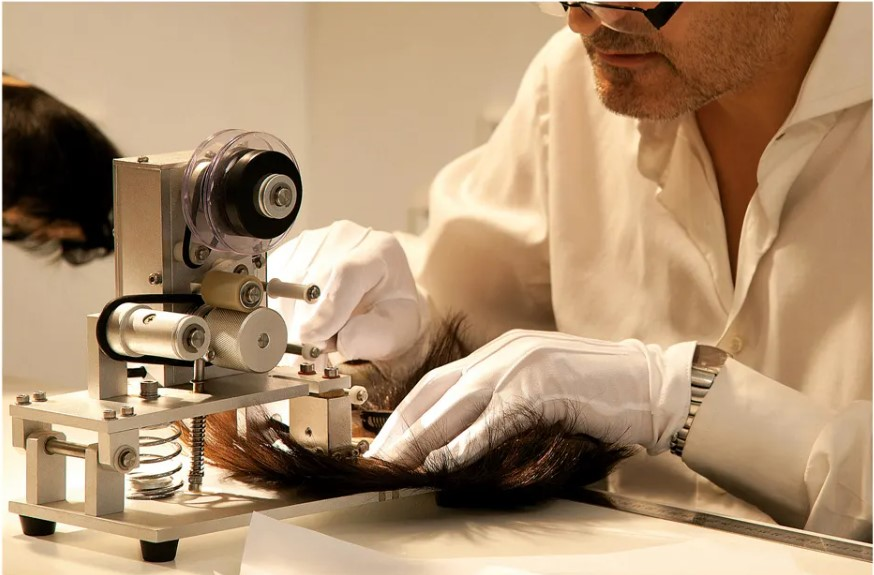
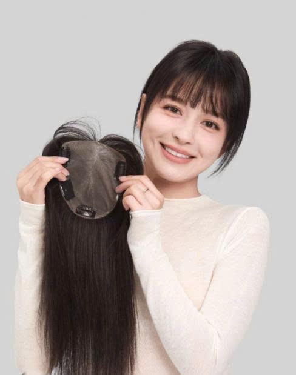
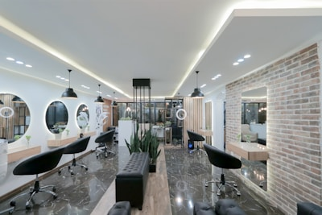
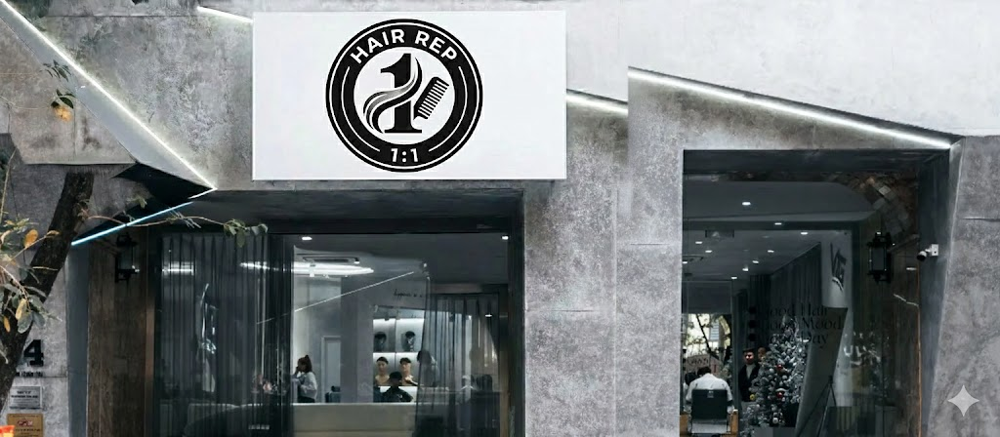
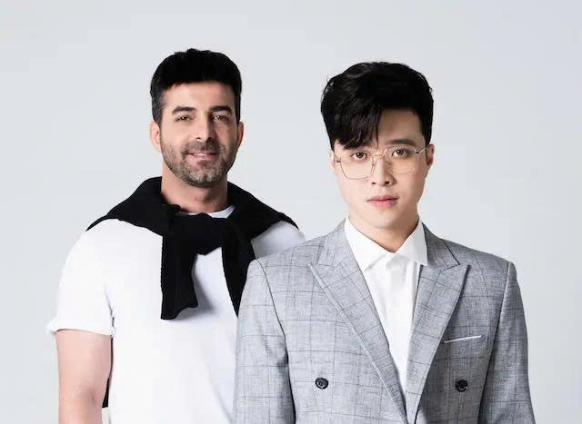

CÂU CHUYỆN THƯƠNG HIỆU HAIR REP 1:1
Hành trình 8 năm kiến tạo sự tự tin cho hàng ngàn khách hàng
HÀNH TRÌNH PHÁT TRIỂN
Từ những bước đầu tiên đến vị thế hàng đầu ngành tóc giả Việt Nam
Khởi đầu & Nghiên cứu
Hair Rep ra đời với mong muốn mang đến những giải pháp tóc giả chất lượng cao, an toàn và phù hợp với đặc điểm người Việt. Trong những ngày đầu, đội ngũ sáng lập tập trung nghiên cứu chuyên sâu về chất liệu tóc thật, cấu trúc da đầu, kỹ thuật tạo hình và nhu cầu thẩm mỹ ngày càng đa dạng của khách hàng. Đây là giai đoạn đặt nền móng cho triết lý phát triển: lấy khách hàng làm trung tâm – lấy chất lượng làm cốt lõi – lấy sự chân thật làm kim chỉ nam.

Chuẩn hóa quy trình thủ công
Sau quá trình thử nghiệm và hoàn thiện, Hair Rep chính thức xây dựng và chuẩn hóa quy trình sản xuất tóc giả dệt thủ công độc quyền. Mỗi sản phẩm là kết tinh của sự khéo léo, tỉ mỉ và tâm huyết từ những người thợ lành nghề, đảm bảo độ tự nhiên, mềm mại và độ bền vượt trội. Từng sợi tóc được xử lý cẩn trọng, từng chi tiết nhỏ đều được chăm chút, tạo nên những mái tóc không chỉ đẹp về hình thức mà còn thoải mái, an toàn khi sử dụng lâu dài.
Mở rộng hệ thống salon
Đánh dấu bước chuyển mình mạnh mẽ, Hair Rep mở rộng hệ thống salon tại Hà Nội, Đà Nẵng và TP. Hồ Chí Minh. Không gian được thiết kế hiện đại, riêng tư, kết hợp cùng đội ngũ tư vấn chuyên nghiệp, giúp khách hàng an tâm chia sẻ và lựa chọn giải pháp phù hợp nhất với tình trạng tóc và phong cách cá nhân. Hair Rep không chỉ bán sản phẩm, mà mang đến một hành trình trải nghiệm trọn vẹn – từ tư vấn, thiết kế, thử nghiệm đến chăm sóc hậu mãi.

Cá nhân hóa sản phẩm
Thấu hiểu rằng mỗi khách hàng là một câu chuyện riêng, Hair Rep ra mắt dịch vụ thiết kế tóc giả cá nhân hóa 100%. Từ kiểu dáng, màu sắc, độ dài, mật độ tóc đến form gương mặt – tất cả đều được “đo ni đóng giày” theo nhu cầu và cá tính của từng người. Mỗi mái tóc không còn là sản phẩm đại trà, mà trở thành một phiên bản độc bản, phản ánh phong cách, sự tự tin và dấu ấn cá nhân của khách hàng.

Nâng cấp trải nghiệm
Bước vào giai đoạn phát triển mới, Hair Rep tiên phong ứng dụng công nghệ AI trong tư vấn và thiết kế kiểu tóc. Công nghệ giúp phân tích khuôn mặt, phong cách và nhu cầu sử dụng, từ đó đề xuất giải pháp tối ưu nhất. Sự kết hợp giữa giá trị thủ công truyền thống và công nghệ hiện đại đã mở ra một chuẩn mực mới cho ngành tóc giả tại Việt Nam.
Định hướng phát triển sản phẩm của Vua Tóc Giả
Hair Rep mong muốn mỗi năm mang đến cho hàng triệu khách hàng trên toàn cầu những nụ cười hạnh phúc khi được ngắm nhìn lại mái tóc bồng bềnh của mình, thông qua việc cung cấp các giải pháp làm đẹp và chăm sóc sức khỏe mái tóc toàn diện. Hướng tới vị thế thương hiệu giải pháp tóc giả hàng đầu Việt Nam và vươn ra thị trường quốc tế, Hair Rep không ngừng nâng cao chất lượng tóc thật từ nguồn nhập khẩu uy tín, mở rộng hệ thống salon theo tiêu chuẩn trải nghiệm 5 sao, phát triển các sản phẩm cá nhân hóa 100%, ứng dụng công nghệ AI trong tư vấn – thiết kế, đồng thời chú trọng dịch vụ hậu mãi và chăm sóc khách hàng bền vững, lâu dài.

Cam kết của chúng tôi
Chất lượng
Luôn đảm bảo chất lượng dịch vụ tốt nhất cùng sản phẩm an toàn, đảm bảo nguồn gốc, rõ ràng, minh bạch.
Chuyên nghiệp
Thái độ làm việc chuyên nghiệp, tận tâm của đội ngũ nhân viên, sẵn sàng đồng hành cùng khách hàng xuyên suốt.
Khách hàng là trên hết
Lấy sự hài lòng của khách hàng làm trọng tâm, VTG không ngừng nỗ lực để đáp ứng nhu cầu một cách tốt nhất.
Mục tiêu dài hạn

Tiên phong
Vua Tóc Giả trở thành tập đoàn toàn cầu, hàng đầu trong lĩnh vực cung cấp giải pháp làm đẹp và sức khỏe mái tóc.
Trách nhiệm
Mong muốn mang lại cho hàng triệu khách hàng trên toàn cầu mỗi năm những nụ cười hạnh phúc.
Bền vững
Luôn đặt các giá trị Chân - Thiện - Mỹ lên hàng đầu.